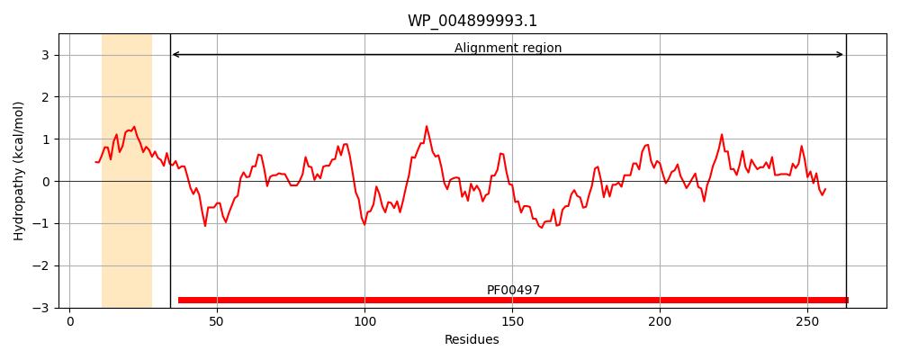
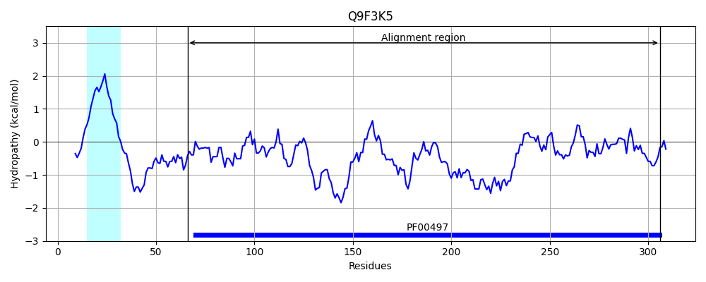
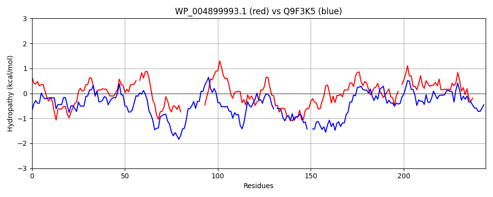

Hit Accession: Q9F3K5
Hit TCID: 3.A.1.3.24
Hit Description: gnl|BL_ORD_ID|17947 gnl|TC-DB|Q9F3K5|3.A.1.3.24 Secreted protein OS=Streptomyces coelicolor (strain ATCC BAA-471 / A3(2) / M145) GN=SCO5260 PE=4 SV=1
Mach Len: 244
e:0.000000
Query TMS Count : 1
Hit TMS Count: 1
TMS-Overlap Score: 0.000000
Predicted Substrates:CHEBI:2642;alpha-amino acid
BLAST Alignment:
Score: 266 , Bit scores: 107 bits, E-value: 2.6e-27, Alignment length: 244, Percentage identity: 33
Query: 34 EGVFKVGMEVTYPPFESYDSNNNIVGLDPDFAALIAQHLQAKPQLIDTKFTSLILGI-GKKYDAVISGMYVTPERQKQADA------------IPYALSGASIIALKGGAVQPKTEDELCGVKVGLQAGTTWVTSLKKHSDEWCLKNGKPAITIQEFPTAPEASQALLSKNIGAQLEIAPAAQIIVDKSRGRLGISST-RLVYPLPLGIYVAKGNTELAEAIKATLAALKANGQYAALIKKYNL 263
+G KVG ++ Y P E D + VG+DPD A + + L K + + F +LI G+ K+YD +S M T +RQ+ D + Y +G SI KG KT +LCG K+ +Q GT L K +E C K I++Q F +A L + A P A V S G V P GI VAK NT+L +A+KA L A+ ANG+Y ++ K+ +
Sbjct: 66 KGTIKVGSDIAYAPVEFKDDSGKTVGIDPDLADALGKQLGVKFEFENGTFDTLITGLRSKRYDIAMSAMTDTKDRQEGIDGDTGKKVGQGVDFVDYFTAGVSIYTKKGDDQGIKTWSDLCGKKLVVQRGTV-SEDLAKAENEKCPAGKK--ISMQPFDNDQQAQTRLRAGGADAGSSDFPVAAYAVKTSGGGKDFELVGEQVEAAPYGIAVAKDNTQLRDALKAALDAVIANGEYKKIMDKWGV 306 | Protein Hydropathy Plots: |
|---|
|  |  |
Pairwise Alignment-Hydropathy Plot:
|
|---|
|  |